The history of neural networks

neural network
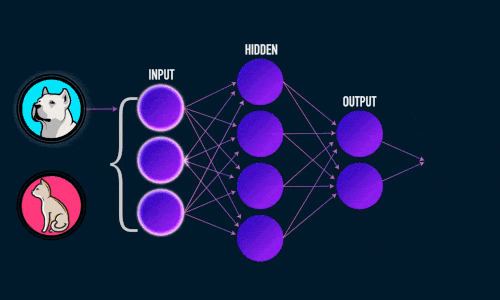1943
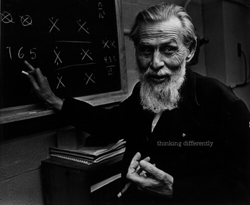
warren_mcculloch
walter_pitts

1949
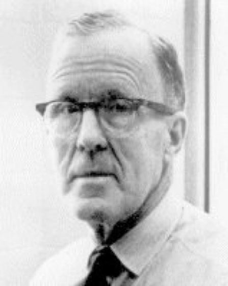donald_hebb
1954
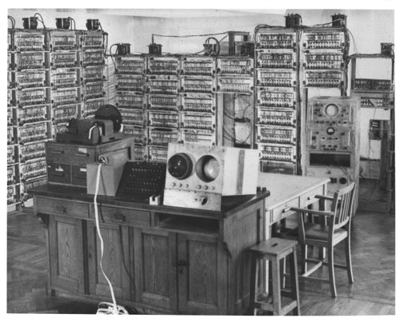Manchester_MEG_Computer_System
1956
workshop organizers
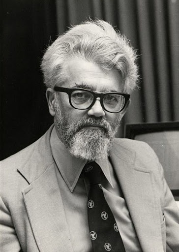
John_McCarthy
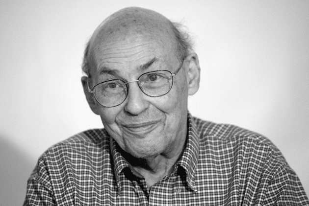
Marvin_Lee_Minsky
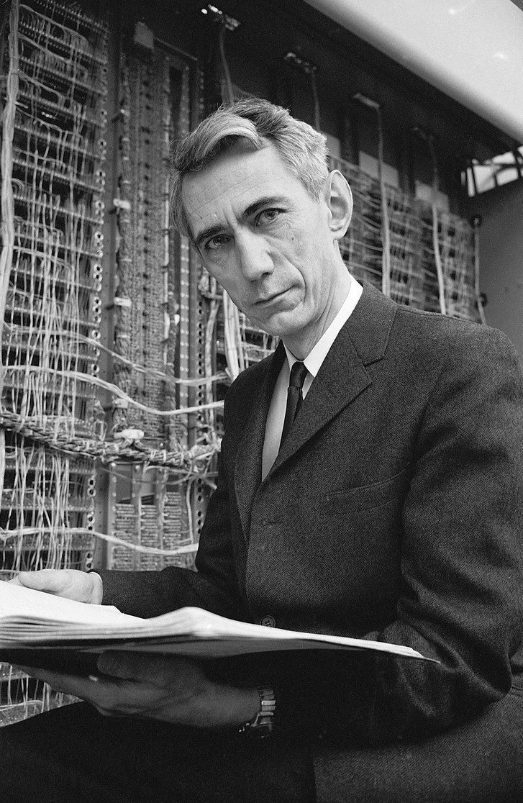
Claude Elwood Shannon
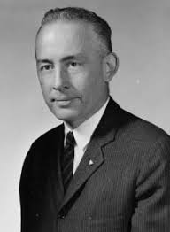
Nathaniel Rochester
invited scientists

Arthur Samuel

Allen Newell
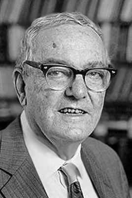
Herbert A. Simon
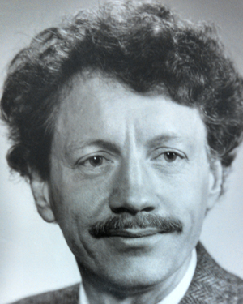
Trenchard More
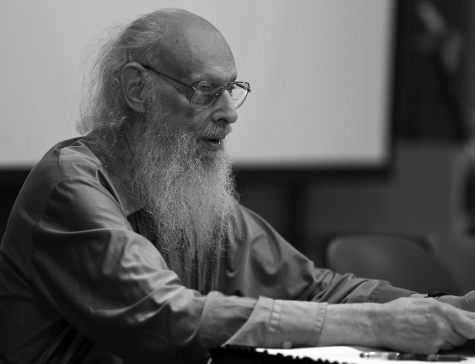
Ray Solomonoff
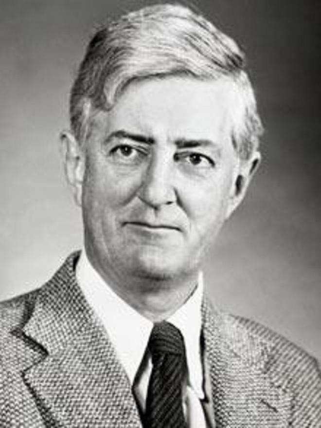
Oliver Gordon Selfridge
also participated
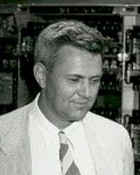
Julian Bigelow
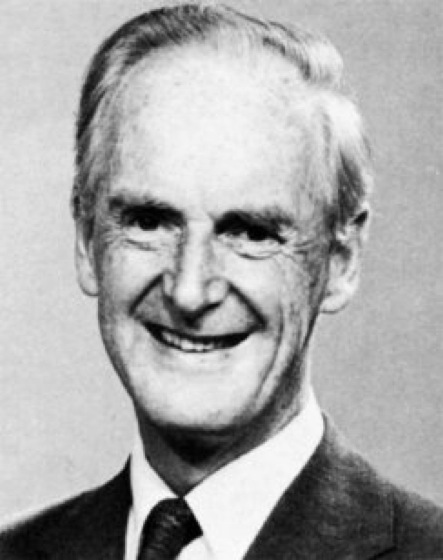
Donald MacCrimmon MacKay
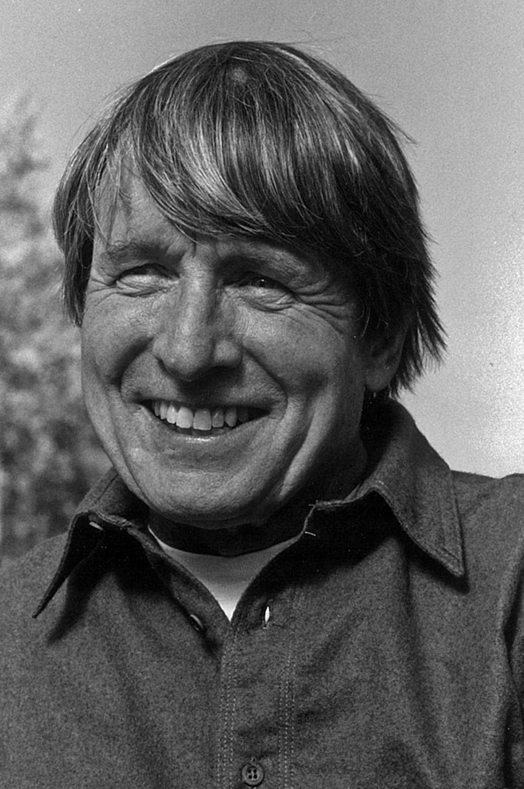
John Henry Holland
1957
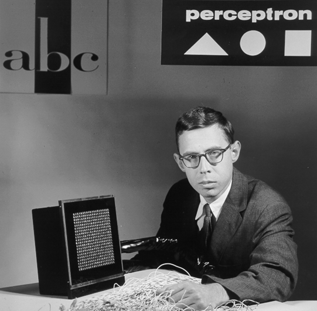Frank Rosenblatt

AI winter

1974
Paul_John_Werbos
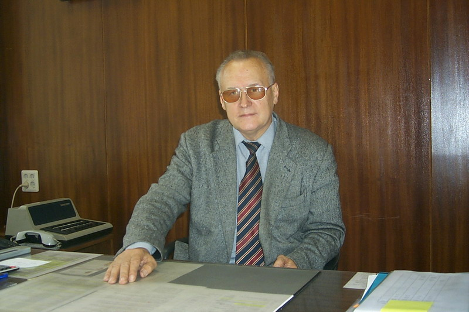
Galushkin A. I.
1975
Kunihiko Fukushima
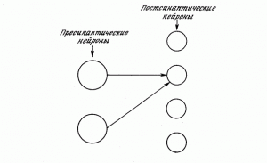
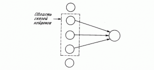
1982
John Joseph Hopfield
Hopfield network
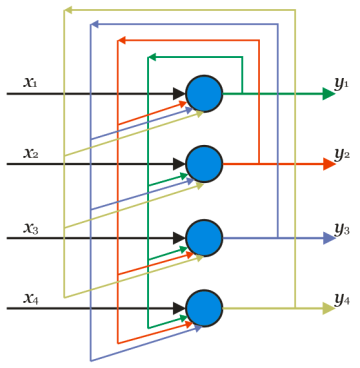1982
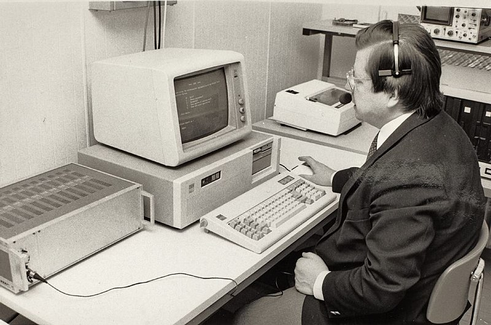Teuvo_Kohonen
Kohonen Neural Network
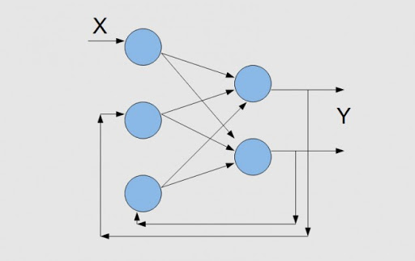1986
connectivism
- Training and knowledge require a variety of approaches and the ability to choose the best approach.
- Training is the process of forming a network for connecting specialized nodes and information sources.
- Learning and cognition are ongoing - it is always a process and never a state.
- Timeliness (accuracy, updating knowledge) is a necessary feature of modern education. Folders were replaced by streams (folders - accumulation of knowledge, streams - monitoring processes).
- Learning is decision making.